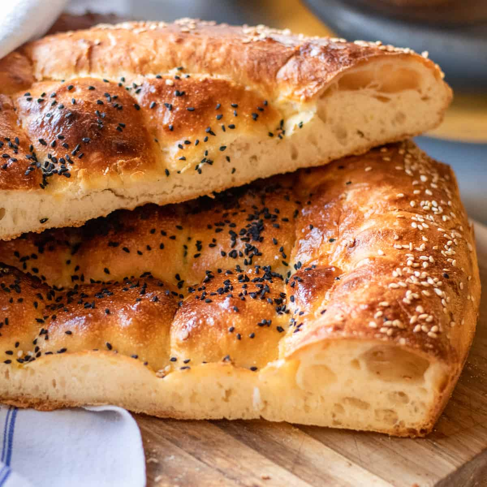

Ramazan pidesi is a traditional Turkish leavened bread shaped into round, flat forms. It is made with flour, water, milk, yeast, sugar, salt, and either butter or olive oil. Traditionally consumed during the month of Ramazan, the bread is characterized by its top which is decorated with crisscross patterns or dimples made by pressing into the dough with one’s fingers.
Meal prep time : 1 hour 20 minutes
Servings : 2